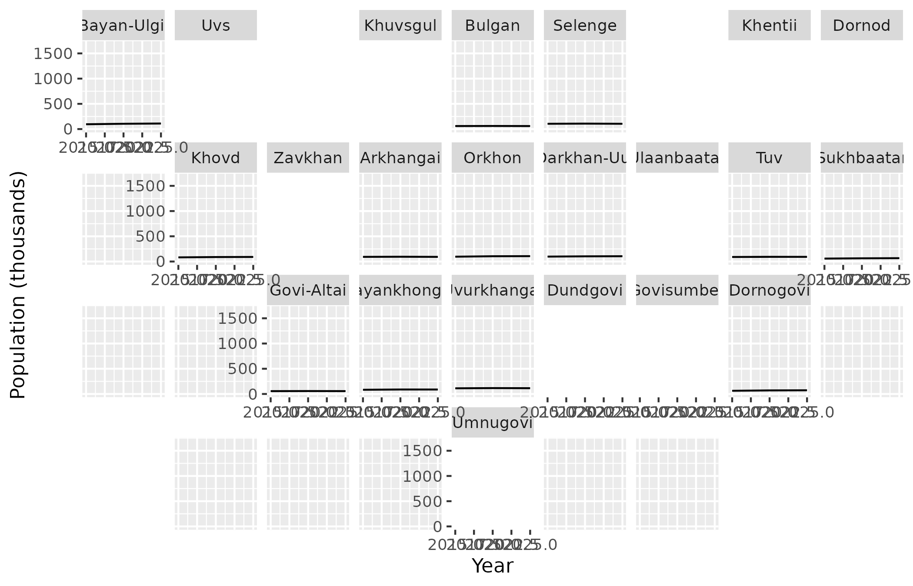

21 аймаг ба Улаанбаатарыг газарзүйн ойролцоо байрлалаар нь 4 х 9 торонд байрлуулсан, geofacet багцын хэрэглэдэг хэлбэрээр.
See also
Газрын зураг зурах бусад функц:
mn_crs(),
mn_label_points(),
mn_leaflet(),
mn_map(),
theme_mn()
Examples
library(ggplot2)
pop <- mn_example_population[nchar(mn_example_population$Region) == 3, ]
pop$code <- mn_match(pop$Region)
ggplot(pop, aes(Year, value / 1000)) +
geom_line() +
geofacet::facet_geo(~code, grid = mn_aimag_grid, label = "name") +
labs(y = "Population (thousands)")
#> Note: You provided a user-specified grid. If this is a generally-useful
#> grid, please consider submitting it to become a part of the geofacet
#> package. You can do this easily by calling:
#> grid_submit(__grid_df_name__)
